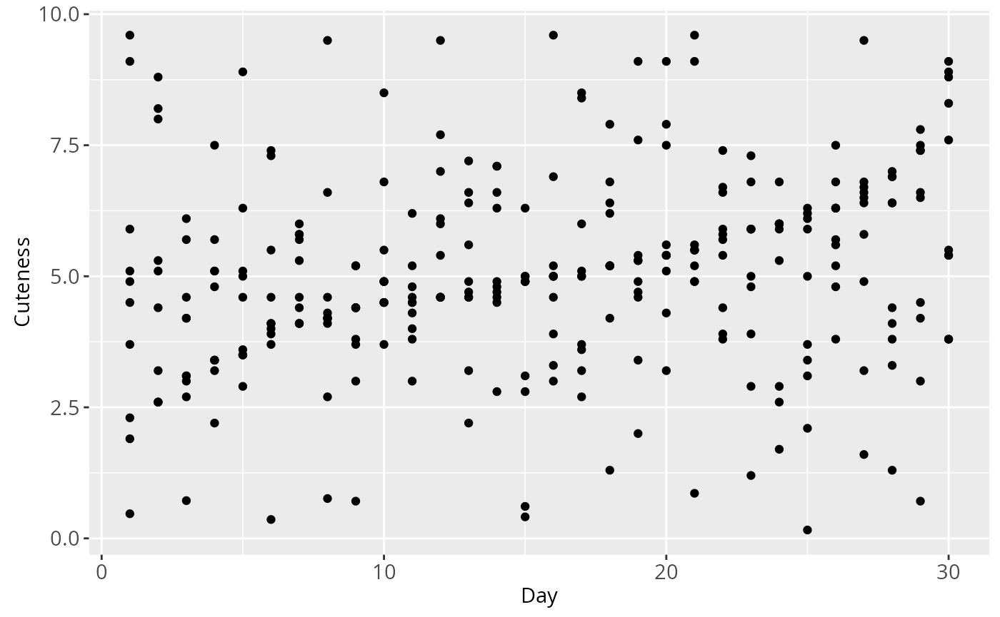

Introduction
Welcome to the quick start guide. My goal is to introduce you to
animint2 in a way that is both brief and easy to
understand. I assume nothing except some basic familiarity with R, data
visualizations, and a little bit of statistics. Some familiarity with
the ggplot2 package is helpful but unnecessary.
After reading this, you’ll leave with a sense of how
animint2 works. You’ll also know how to make interactive
data visualizations, sometimes referred to as animints. For basic
animints, this quick start guide is all you’ll need. To learn how to
make more sophisticated animints, take a look at the animint2
Manual. You may also want to take a look at the animint
gallery, which showcases how sophisticated and powerful animints can
be.
Datasets
Some readers may want to follow along interactively. Both
animint2 and R have datasets that you may use. Access the
dataset list with data(). Alternatively, you may already
have a dataset you’d like to use to experiment with
animint2.
I use a custom dataset in this guide, which I’ve named
meowtrics. The data in the dataset are simulated, which is
a fancy way of saying that I forced a computer to make them up. The data
are about ten different housecats and how they’re perceived over
time.i Here’s a glimpse:
head(meowtrics)## Day Cat Coolness Cuteness Kind
## 1 1 Clifford 0.16 4.50 Domestic Shorthair
## 2 1 Junebug 0.36 3.70 Domestic Longhair
## 3 1 Muffin 0.41 0.47 Cornish Rex
## 4 1 Teddy Bear 0.47 5.10 Domestic Shorthair
## 5 1 Diana 0.61 9.60 Domestic Shorthair
## 6 1 Bello 0.71 1.90 Domestic ShorthairAnatomy of a Data Visualization
Data visualizations are commonplace, and for good reason. Large tables of data are difficult to parse. A good data visualization can illuminate patterns that would have otherwise hard to spot. In contrast, a poor (or deliberately misleading) data visualization can obscure even obvious patterns. How do we design good data visualizations while avoiding bad ones?
We start by understanding what data visualizations are made of and
how they’re arranged. This arrangement is often called the grammar of
graphics.ii This quick start guide won’t
teach you the grammar, and you don’t need to know it to get started with
animint2. But you should know that the syntax of
animint2—that is, the way the code is written—is modelled
on the grammar.
Let’s see an example. Say I want to visualize how people rate cat cuteness over time. I want the y-axis to depict the cuteness ratings, and the x-axis the days. I also want it to be a scatterplot. What should I do?
First, if I haven’t already, I need to install
animint2:
install.packages("animint2")I load animint2:
Next, I search for the functions that I’ll need and put them
together. First, I need ggplot(), which is like the blank
sheet of paper (or computer screen) the program draws on to make the
graph.iii To make a scatterplot, I’ll use
either geom_point() or geom_jitter(). Finally,
for the axes, I’ll need aes().
Then I name the graph and put it all together:
cute_plot <- #1
ggplot() + #2
geom_point( #3
data = meowtrics, #4
aes(x = Day, y = Cuteness)) #5
cute_plot #6
If you’re unfamiliar with the syntax, the code can get confusing.iv Let’s go over this code block line by line:
-
I name the data visualization. Since it’s a
scatterplot about cat cuteness, I name it
cute_plot. You can name data visualizations whatever you like, but it’s best if you name it something that will make sense to your future self. -
Next, I call the
ggplot()function, since I’m making a data visualization. -
Then I call
geom_point(), because I’m making a scatterplot. -
I want to use my
meowtricsdataset to draw the points in my scatterplot, so I setdata = meowtrics. -
aes()controls the aesthetics of the data visualization, including axes. I place it insidegeom_point()and tell my program that the Day and Cuteness variables are on the x- and y-axes, respectively. - I repeat the name of my data visualization, which tells the program to display my graph.
Look at the plot. We can see that while there’s a lot of variance in
the data, there seems to be an upward trend in cat cuteness ratings. But
this graph could be better. And animint2 gives us the tools
to improve it.
Take a look at this slightly modified data visualization:
cute_plot_2 <- #1
ggplot() +
geom_point(
data = meowtrics,
aes(x = Day, y = Cuteness,
group = Cat, color = Cat)) + #2
labs(title = "Cat Cuteness Ratings Over Time") #3
cute_plot_2
Each cat is differentiated from one another by color, and there’s now a legend. Codewise, what’s changed?
- This data visualization has a different name. If two plots have the same name, one will override the other.
-
I’ve added new arguments to
aes(): I’ve grouped the points in the scatterplot by cat, and I’ve also differentiated the cats’ data points by color.v -
Using
labs(), I’ve given the graph a title.
While this new graph communicates more information, it’s also somewhat overwhelming. What if we could move some of the data out of the way? Or compare a subset of cat cuteness ratings instead of seeing everything at once? Reader, I have good news.
Making Animints
The good news is this: animint2 makes it easy to render
a static data visualization interactive. Just use the
animint() function with the previous plot as the
argument:
animint(cute_plot_2)
This is an animint of our second static data visualization. By clicking on the legend or by using the selection menu, you can control which subjects have their data graphed, as well as how many.vi This allows you to explore your data without needing to facet all possible cat combinations. For exploratory data analysis, this level of control may be all you need.
In some cases, you may want more control. Say you want to emphasize
Archibald and Muffin’s cuteness ratings over time. In
animint2, you would use the first argument and
specify which cats to present:
cute_present <-
animint(cute_plot_2,
first = list( #1
Cat = c( #2
"Archibald", "Muffin")))
cute_present
This is most useful for situations where you’re showcasing or presenting your animint. Pay attention to the syntax:
Using showSelected
Our current animints use three variables: Day, Cuteness, and Cat. What if you want to explore or present a fourth?vii In a static data visualization, this would require multiple graphs or the addition of an unwieldy third dimension.
Luckily, animints are not subject to the same restrictions. In
animint(), we can use the showSelected and
time arguments to show how the Coolness and Cuteness
variables interact day-by-day.
First, let’s look at an animint with the showSelected
variable:
associations <-
ggplot() +
geom_point(
data = meowtrics,
showSelected = "Day", #1
aes(x = Coolness, y = Cuteness,
color = Cat, group = Cat,
key = Cat)) + #2
labs(title = "Associations Between Cuteness and Coolness")
animint(associations)
-
showSelected = "Day"lets you adjust the day in the selection menu. -
Most real-world datasets have missing values.
keyaccounts for that when transitioning between different days.
You can use the selection menu to see the different associations between cuteness and coolness ratings per day.viii
Next, let’s see that same animint with the time and
duration options applied:
animated_associations <-
animint(associations,
duration = list(Day = 1000), #1
time = list( #2
variable = "Day",
ms = 1000)) #3
animated_associations
-
durationspecifies how quickly the points move from their old location to their new location.ix The shorter the duration, the quicker the movement. It takes a list and uses milliseconds as its unit of measurement. -
timealso takes a list. -
In contrast to
duration,time = list(ms)specifies how long the points stay in place. It also uses milliseconds as its unit of measurement.
You can also click the “Show animation controls” button and manually
adjust both the time and duration. Try it
out.
Using clickSelects
So far, we’ve been interacting with animints by clicking the legend
and using the selection menus and animation controls. What if we could
interact with the animint directly? Using clickSelects, we
can do just that. Let’s return to our data visualization depicting
cuteness ratings over time, this time as an animint:
cute_plot_3 <-
ggplot() +
geom_point(
data = meowtrics,
clickSelects = "Cat", #1
aes(x = Day, y = Cuteness,
group = Cat, color = Cat)) +
labs(title = "Cat Cuteness Ratings Over Time")
animint(cute_plot_3)
-
clickSelectstakes a variable with quotations. The variable inclickSelectsandgroupare the same: they’re both Cat.
Hover over and click on the data points. You’ll notice that it has the same effect as clicking on the legend: It removes the data from the animint.
Now, let’s interact with a very similar animint:
cute_plot_4 <-
ggplot() +
geom_point(
data = meowtrics,
clickSelects = "Kind", #1
aes(x = Day, y = Cuteness,
group = Cat, color = Cat)) +
labs(title = "Cat Cuteness Ratings Over Time")
animint(cute_plot_4)
-
I’ve swapped out Cat for Kind. Now the
variables in
clickSelectsandgroupare different. This is a useful way of adding another variable to your data visualizations.
When you interact with this animint, you’ll notice three differences:
- Hover over the animints. In both, you’ll notice a hover box appear. In the first animint, the hover box repeats the cat’s name. In the second, the hover box describes what kind of cat they are.
- In the second animint, there is an additional variable in the selection menu. You can use it to highlight the data points depicting a certain kind of cat.
- When you click on a data point, it doesn’t disappear. Instead, like the selection menu, it highlights data points depicting certain kinds of cats.
Advanced: Linked Plots
animint2 also allows us to link multiple plots together
into one animint. When two plots are linked, a change in one plot can
cause changes in another.
Let’s return to two interactive data visualizations we’ve already looked at: associations between coolness and cuteness, and cuteness ratings over time.
Here’s the first data visualization again, lightly altered:
associations_2 <-
ggplot() +
geom_point(
data = meowtrics,
showSelected = "Day",
clickSelects = "Kind",
aes(x = Coolness, y = Cuteness,
color = Cat, group = Cat,
key = Cat))I want to link it to my plot about cuteness ratings over time. That way, I can see how coolness ratings change over time, too. The linking process is a little more involved than usual:
md <- data.frame(Day = unique(meowtrics$Day)) #1
linked <- animint(associations_2, #2
duration = list(Day = 1000)) #3
linked$overtime <- #4
ggplot() +
geom_tallrect( #5
data = md, #6
aes(xmin = Day-0.5, xmax = Day+0.5), #7
clickSelects = "Day", #8
alpha = 0.5 #9
) + #10
geom_point(
data = meowtrics, #11
clickSelects = "Cat",
aes(x = Day, y = Cuteness,
group = Cat, color = Cat))
linked #12
-
I’m taking the Day column from
meowtrics(meowtrics$Day), stripping redundant days from it viaunique(), renaming it, and then making it adata.frame(). Now I have a dataframe of all 30 days inmeowtrics. This is forgeom_tallrect(), which I’ll use later. -
I take
associations_2and make it an animint. -
durationcontrols how long it takes data points to move from one part of the animint to another. As mentioned, it’s optional. -
I take the previously-created animint and
attach new animints to it. I name the list of animint
overtime. -
This is the
geom_tallrect()function. It creates a vertical bar that allows you to manipulate time variables by clicking on the plot. -
geom_tallrect()requires a new dataset that contains only the time variable. It’s using the dataset that I constructed earlier. -
xminandxmaxcontrol how wide the tallrect is, which affects the appearance of the selected time variable. In this case, it controls how much a day takes up on the tallrect. -
clickSelectsis necessary here, since we need to be able to select the day from the plot. -
alphacontrols the transparency of the tallrect. Lower numbers increase transparency. -
Using
+, I attach the tallrect to the plot about cuteness ratings over time. -
We’re back to using
meowtricsas our dataset. - Finally, we intitate the animint.
Try it out. When you adjust the day on the bottom plot, the top plot also readjusts. When you click on the legend on the top plot, the bottom plot is also affected. These linked plots can get much complex. For examples, see the animint gallery.
Conclusion
And that’s it. You’re now a reasonably competent
animint2 user. Feel free to post any questions to our GitHub issues, and
thanks for reading!
Footnotes
- Fun science fact: Cats are objectively the best animal.
- If you’re interested in learning about the grammar and want to get right to the primary source, see Leland Wilkinson’s The Grammar of Graphics.
-
All data visualizations use
ggplot(). -
Notice also that the
ggplot()andgeom_point()functions are held together by the+symbol. In other words: You begin with a blank data visualization and then add a scatterplot atop it. All functions inanimint2are held together with+. You’ll be using it a lot. - It’s possible to differentiate the data points in a different manner. For example, instead of different colors, I could have used different shapes.
- Play around with the animint. See what you can and can’t interact with.
-
Recall that our
meowtricsdataset has a Coolness variable we haven’t looked at yet. - Play around with it and see what you can do.
-
Fun fact: The
durationargument is optional. If you decide not to usedurationor set it to 0 milliseconds, the points teleport from one location to another.